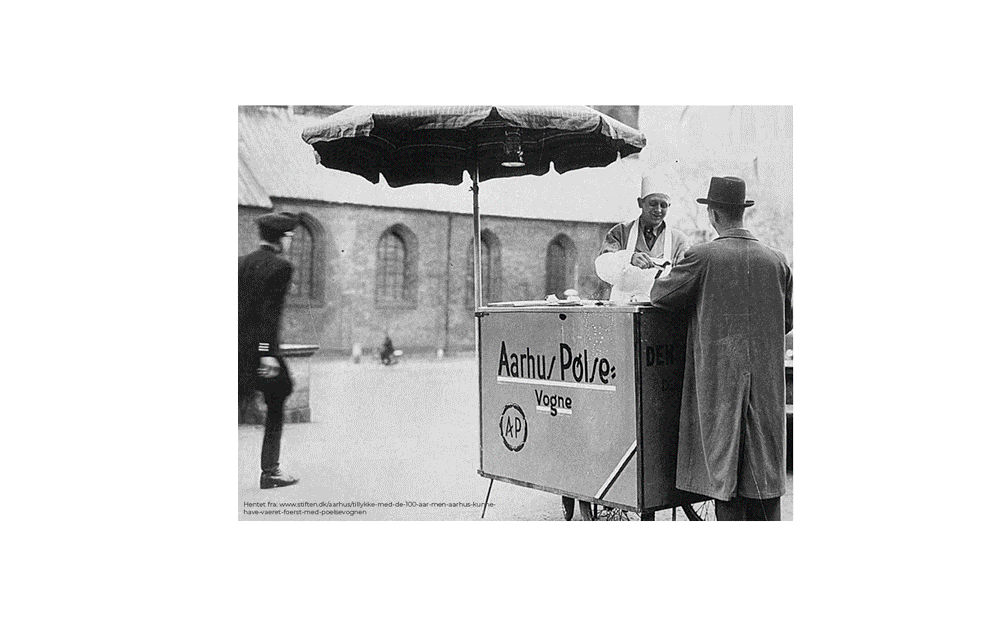

Hvem er vi?
Vores pølsevogne
Rådhuspladsen - Toastvognen
Banegårdspladsen - Ribbenstegsboden
Søndergade v. Salling - Frikadellevognen
Bispetorv - Den veganske
Lille Torv - Den klassiske
Harald Jensens Plads - Burgervognen
Kaffebaren
Hvem er vi?
Støt os
7 pølsevogne
74 års Aarhus historie
Lille Torv - Den klassiske
Harald Jensens Plads - Burgervognen
Rådhuspladsen - Toastvognen
Søndergade - Frikadellevognen
Bispetorv - Den Veganske
Banegårdspladsen - Ribbenstegsboden
Kaffebaren
